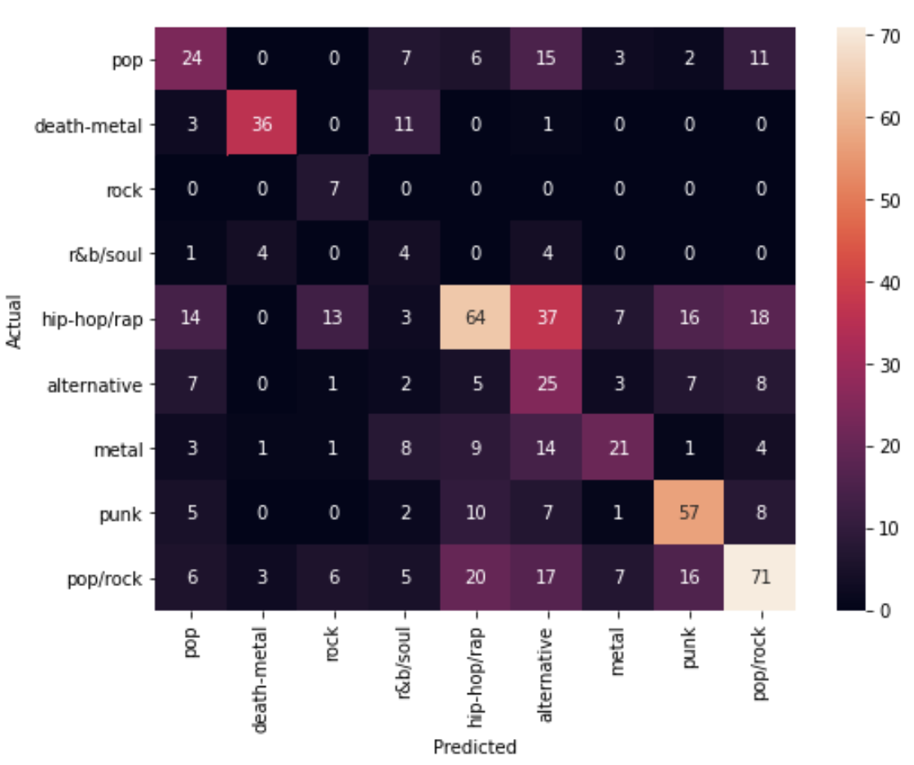
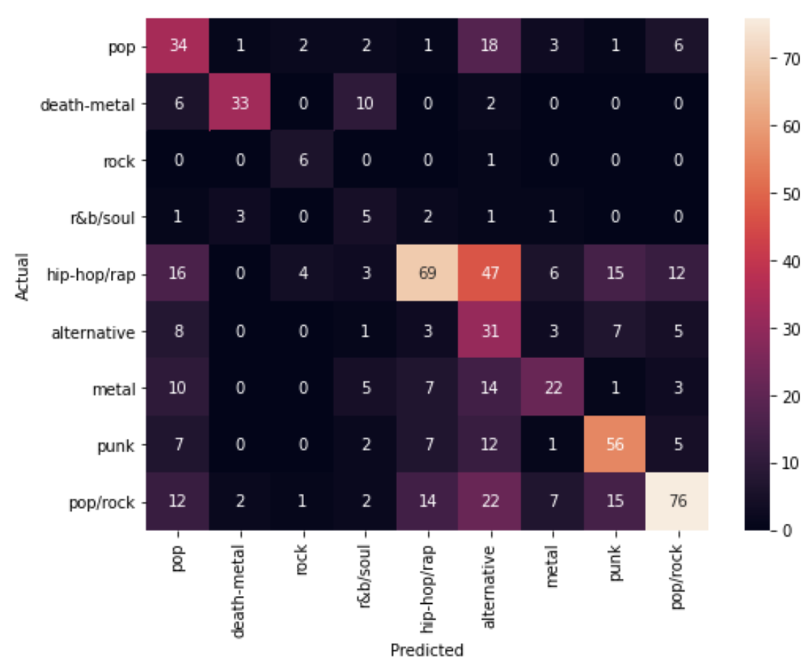
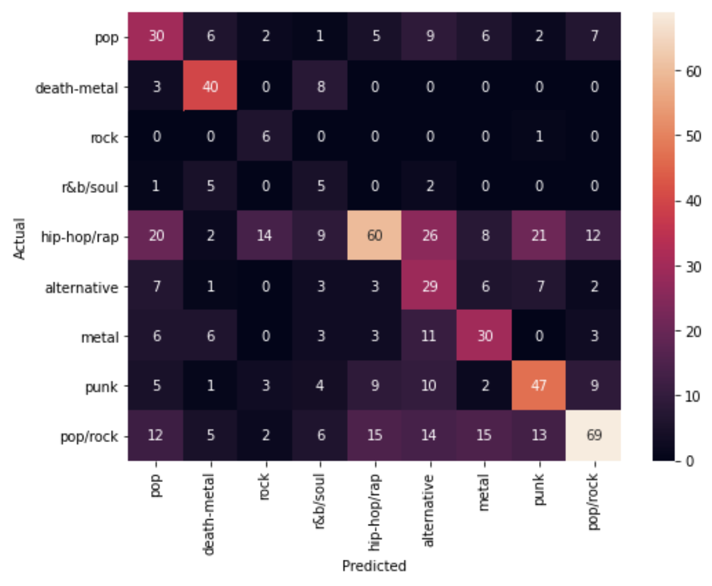
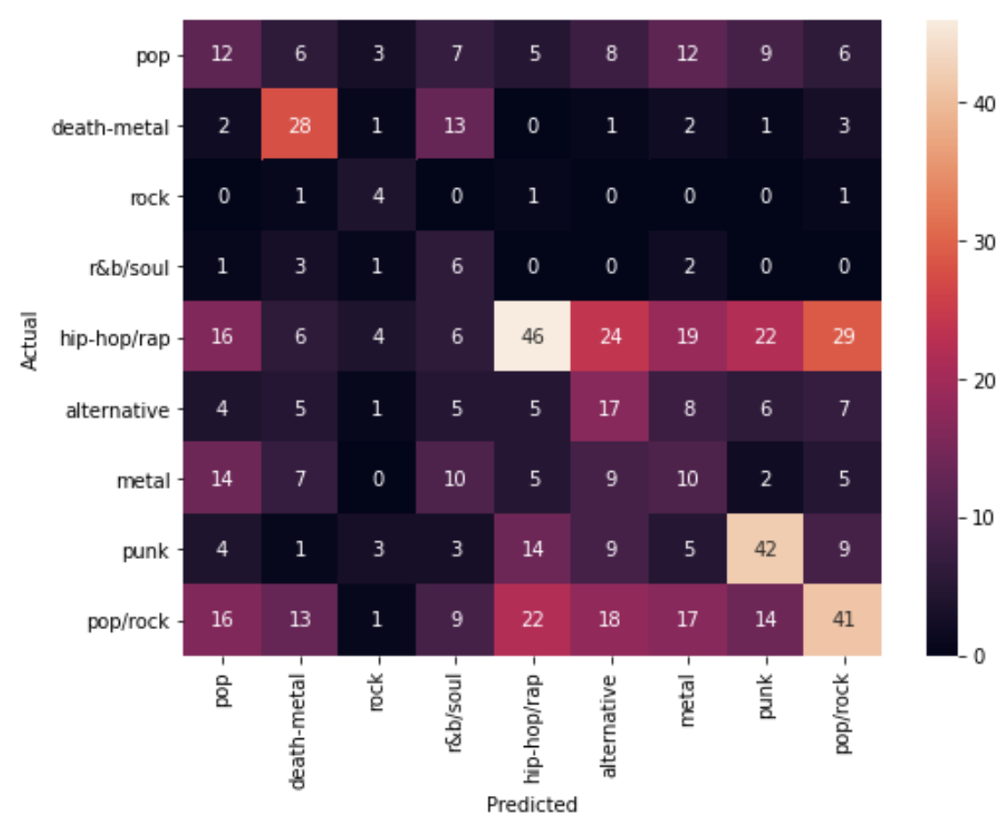
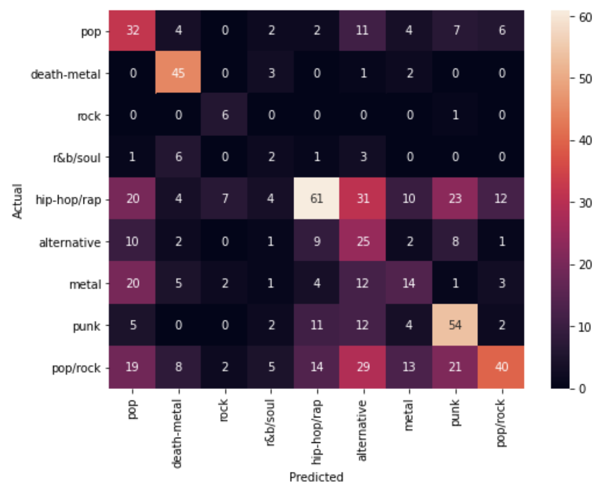
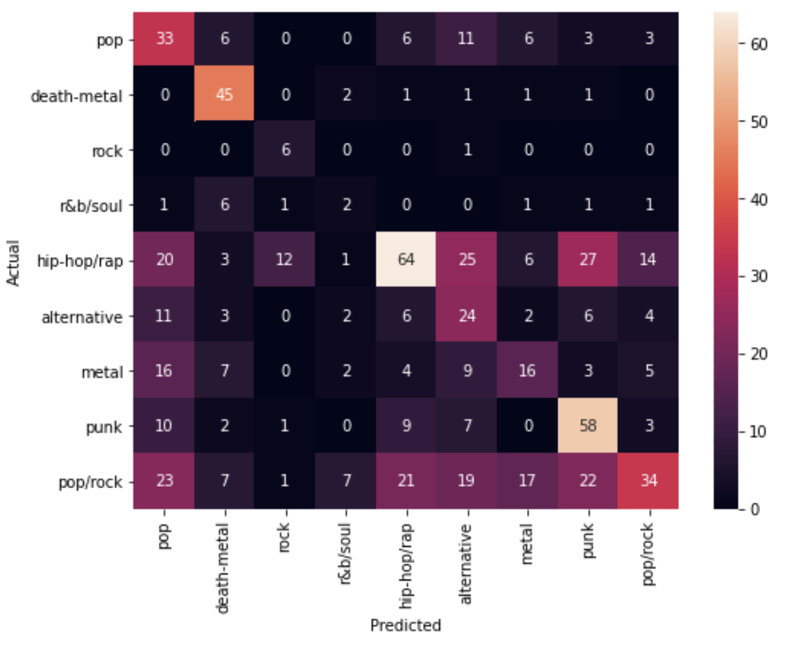
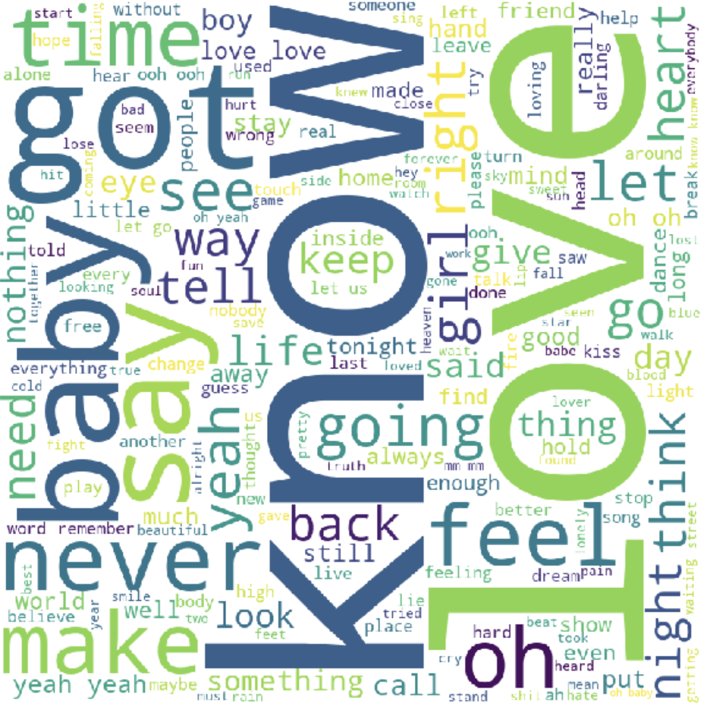

Team Members: Ryan Choi, Taylor Smith, Adrien Zhu, Joshua Atler, Sichong Hua
Introduction
If you go on Spotify and listen to any number of songs, the Spotify algorithm will begin to recommend new music based on what you have previously listened to. This in itself is machine learning: where, based on existing data, you are able to make predictions as to what a user may want to listen to. Machine learning also has other functions in music. Say someone wants to discover new genres of music, but they only have a song’s title or some of its lyrics. By using this information, machine learning algorithms could potentially output similar songs within the same genre. In other words, you could get a Katy Perry song using Taylor Swift lyrics. Following this theme of music, we want to bridge the gap between lyrics and genres, in which given some lyrics, we can identify the genre of the song. In doing so, applications catered towards developing music taste can be more satisfying and help push audio entertainment forward.
Problem Statement
With the large number of genres that currently exist, it can sometimes be challenging to categorize a certain song. As a team, we want to create an application that can understand the relationship between the lyrics and genres, with the lyrics being any meaningful text one can input. More specifically, we are going to first utilize NLP techniques to analyze components of lyrics in respect to its genre and train a classifier model to predict genre of the song. Combining the identified genre and component of lyrics, we can then identify the sentiment level of the song.
Method
Instead of getting lyric data from the Genius API, we decided that it would be both easier and more efficient to use a pre-compiled lyric dataset from Sam Ho's song lyric dataset. The training set includes data points representing the "Artist Name, Song Name, Lyrics, Genre, Lyrics count, Lyrics count norm" attributes. From this, we applied some data cleaning and pre-processing techniques, involving removing the punctuation from the lyrics, including commas and periods, and removing all stop words from the lyrics as well. The stop words that we removed were defined by the NLTK.corpus package in Python. Our next step in creating a meaningful training/test dataset involved using Google’s Universal Sentence Encoder. In using this tool, we were able to convert each song lyric input to a high-dimensional vector of numbers, which we used for our next step, which was PCA. Our main goal is to train a model that can use text processing technique to analyze the correlation parameter between genre and lyrics. Since we have the artist name and song name, we will use these two attributes as a simple logic guide to see if our training set yields the right genre type (eg. Katy Perry will have the majority of her songs under the "pop" genre). There are 3600 songs included in the training set. We understand that some of these associations between the artist and genre will have to be done manually.
As we seen from our visulization data, word counts and word frequencies are relevant indicator to distinguish between different genre. Therefore, it would be a great approach to train our data.
Data Models
In order to obtain word count and word frequency, we are going to use method provided by sklearn library. First one is CountVectorizer, which is a quick and dirty way to train a language model by using simple word counts. As for word frequency, a more advanced model was used, that is TfidfVectorizer. Basically, the method focus on low frequency words within each genre since it's a more important feature in a language model. We are going to mostly focus on TfidfVectorizer because it provides more specific insights in comparsion with CountVectorizer.
5 different models have been put into trials and tests. We have evaluated them based on the accuracy derived from the testing data.
1. The Multinomial Naive Bayes model. The accuracy of predicting the right genre is 0.45982.
Bernoulli Naive Bayes. The accuracy of predicting the right genre is 0.49404. This is close to 0.5, which is a great improvement.
The Logistic Regression. The accuracy of predicting the right genre is 0.47023
The Decision Tree model. The accuracy of predicting the right genre is 0.32142, which is extremely low and can’t indicate accurate conclusions.
The Random Forest model. The accuracy of predicting the right genre is 0.32142, which is extremely low and can’t indicate accurate conclusions.
The Multi-layer Perceptron model. The accuracy of predicting the right genre is 0.45982142857142855
Using NLTK toThe word cloud is shown as below.
Conclusion and Possible Next Steps
Based on our 5 regression models, we have concluded that there is a correlation between the lyrics and the genre of a song, though none of them has exceed 0.5. This suggests that lyrics can only indicate genre to some extent. Theoretically, we are able to use english text as input lyrics and indicate the genre of it. For existing songs, we are able to categorize them based on the lyrics.
Possible next step: (1) Use data generated from google universal sentence encoder to serve as indicator (put some introduction and how it works) (2) Use CNN in respect to word frequency(TfidfVectorizer), (look up this link: https://github.com/dipayandutta93/Music-Genre-Classification-using-lyrics and control-F "Model III"
References
[1]Thierry Bertin-Mahieux, Daniel P.W. Ellis, Brian Whitman, and Paul Lamere. The Million Song Dataset. In Proceedings of the 12th International Society for Music Information Retrieval Conference (ISMIR 2011), 2011.
[2]Chu Claudia, Kumala Enoch, 2020, Mapping song lyrics to musical feature space, https://suraj-masand.github.io/cs4641-project/index.html
[3]Tsaptsinos, Alexandros, 2017, Lyrics-Based Music Genre Classification Using a Hierarchical Attention Network
[4]Songlyrics_univeral_sentence_encoder ,kitsamho, 2020 https://github.com/kitsamho/songlyrics_univeral_sentence_encoder